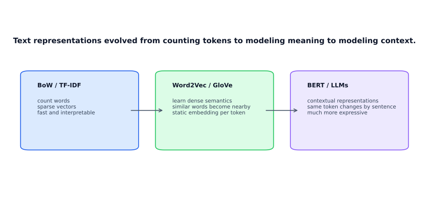
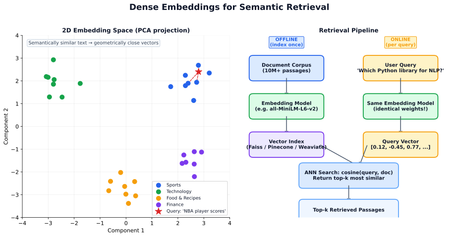

Explore this chapter with hands-on visualizations: Tokenization, Attention Mechanism, Transformer Architecture, Embeddings, LoRA | RAG Pipeline Simulator, Attention Head Inspector
Natural language processing spans a wide range: classical bag-of-words models, word embeddings, transformers, and today’s large language models. This chapter is designed as a guided climb through that stack, so each new idea feels like a natural extension of the previous one rather than a jump into jargon.
What you will learn:
| Section | Topic |
|---|---|
| 11.1 | NLP fundamentals: tasks, taxonomy, applications |
| 11.2 | Text representations: BoW → TF-IDF → embeddings |
| 11.3 | Transformer architecture: attention, BERT vs GPT |
| 11.4 | Tokenization and BPE |
| 11.5 | Dense embeddings for retrieval |
| 11.6 | Retrieval-Augmented Generation (RAG) |
| 11.7 | Fine-tuning and alignment (SFT, LoRA, RLHF, DPO) |
| 11.8 | Prompting and in-context learning |
| 11.9 | LLM evaluation and hallucination |
| 11.10 | Agentic AI: tool use, function calling, multi-agent systems, MCP |
| 11.11 | LLM Quantization: INT8, INT4, GPTQ, AWQ, GGUF |
Prerequisites: Deep learning fundamentals (Chapter 10), basic linear algebra.
NLP (Natural Language Processing) = AI for human language in text and speech. Deep learning is one modeling approach within NLP. The intersection of the two is sometimes called Deep NLP (DNLP).
| NLP | = problem space (language tasks) |
| Deep Learning | solution family (neural models) |
| DNLP | = NLP solved with deep learning |
Modern systems typically use one pretrained transformer for many tasks, but the task categories still matter for defining evaluation metrics and problem structure.
| Group | Tasks | Examples |
|---|---|---|
| Understanding | Classification, NER, QA, information extraction | Sentiment analysis, named entity recognition |
| Transformation | Translation, summarization, transcription, rewriting | Machine translation, document summarization |
| Generation | Dialogue, captioning, structured generation | Chatbot responses, report generation |
Key: Most real NLP pipelines combine all three. A customer support bot understands the user’s intent, transforms it into a search query, and generates a response.
| Application | ML task type |
|---|---|
| Chatbot / dialogue | Seq2Seq generation |
| Machine translation | Seq2Seq (encoder-decoder) |
| Sentiment analysis | Classification |
| Named entity recognition (NER) | Sequence labeling |
| Summarization | Seq2Seq or extractive selection |
| Question answering | Span extraction or generation |
| Speech-to-text (ASR) | Seq2Seq (audio → text) |
Seq2Seq (sequence-to-sequence) is the core pattern when both input and output are ordered sequences:
\[ P(y_{1:T'} \mid x_{1:T}) = \prod_{t=1}^{T'} P(y_t \mid y_{<t}, x_{1:T}) \]
Where: \(x_{1:T}\) = input sequence of length \(T\), \(y_{1:T'}\) = output sequence, \(y_{<t}\) = all previously generated tokens before position \(t\).
Seq2Seq handles: translation (English → French), summarization (long text → short text), transcription (audio → text), dialogue (utterance → response).
The central challenge in NLP is turning variable-length text into fixed-size numerical vectors that a model can learn from. Representations evolved from sparse token counts to dense semantic vectors.

BoW maps a document to a vector over a vocabulary \(V\): each dimension counts the occurrence of one word.
\[ v \in \mathbb{R}^{|V|}, \quad v_i = \text{count of word } i \text{ in document} \]
Strengths: simple, fast, interpretable. Weaknesses: discards word order, treats “not good” and “good” identically, high-dimensional sparse vectors.
TF-IDF weights words by how distinctive they are to a document within the corpus.
\[ \text{TF-IDF}(t, d) = \underbrace{\text{tf}(t, d)}_{\text{frequency in doc}} \times \underbrace{\log \frac{N}{\text{df}(t)}}_{\text{rarity across corpus}} \]
Use case: document search and classification where keyword matching matters.
N-grams extend BoW to sequences of \(n\) consecutive words:
{quick, brown, fox}{quick_brown, brown_fox}{quick_brown_fox}Orthogonal Sparse Bigrams (OSB) extend this with skip-aware pairing: anchor on the first word in a window, pair it with all subsequent words. Useful for classical spam filtering but replaced by embeddings in production NLP.
free limited time offer]:free_limited, free__time, free___offer (underscore count = distance)
Embeddings replace sparse BoW vectors with dense \(d\)-dimensional vectors where words with similar meaning are geometrically close.
Word2Vec skip-gram: train a shallow neural network to predict context words from a center word.
"good""are", "really", "at", "heart"]Mathematically: given center word one-hot \(x\),
\[ h = Wx, \quad u = W'h, \quad P(w_j \mid w_c) = \frac{e^{u_j}}{\sum_k e^{u_k}} \]
Where: \(x\) = one-hot vector of center word, \(W\) = input embedding matrix, \(W'\) = output embedding matrix, \(h\) = hidden representation (the word embedding).
After training, similar words cluster in the learned embedding space:
"king" − "man" + "woman" ≈ "queen" (semantic arithmetic)
GloVe: similar result but trained on global word co-occurrence statistics rather than local windows.
Important OOV caveat for basic embeddings: Word2Vec and GloVe usually depend on a fixed vocabulary learned during training. If an unseen token appears at inference, classical pipelines often map it to a generic <UNK> vector or ignore it. So with basic embeddings, a new product code, a brand-new company name, or a misspelled word may lose most of its meaning unless you use subword-aware methods such as FastText or BPE-based transformers.
FastText: represents each word as a bag of character n-grams. Handles out-of-vocabulary (OOV) words and morphological variants naturally.
"running" → "run" + "runn" + "unni" + "nnin" + "ning"
Comparison:
| Method | Training | OOV handling | Best for |
|---|---|---|---|
| Word2Vec | Local windows | No | General dense embeddings |
| GloVe | Co-occurrence matrix | No | Semantic similarity tasks |
| FastText | Subword n-grams | Yes | Morphologically rich languages, typos |
Word2Vec/GloVe give every word one fixed vector regardless of context. “Bank” (river vs financial) gets the same vector. Contextual embeddings (BERT, LLMs) produce a different vector for the same word depending on its sentence context.
| Type | Example | Vector |
|---|---|---|
| Static | "bank" (always) | [0.3, 0.1, -0.2, …] |
| Contextual | "bank by the river" | [0.1, -0.3, 0.4, …] |
| "bank account" | [0.4, 0.2, -0.1, …] |
Recommended visual guide: The Illustrated Transformer (Jay Alammar). This section follows the same spirit: start with one input sentence, then unpack the moving parts one by one.
The Transformer can feel intimidating because people often introduce it in the middle of the math. A better way is to follow one sentence as it moves through the model.
Suppose the input is:
At this stage the model does not see words directly. It sees a sequence of vectors. Each vector says something about the token’s meaning, and positional encoding says where that token sits in the sentence.
A Transformer layer is easier to understand if you think of it as two steps repeated many times:
In practice, each block also uses residual connections and layer normalization so training stays stable. Conceptually, though, the heart of the model is still “mix information across tokens, then refine each token.”
Self-attention is the mechanism that made Transformers so powerful. When the model processes one token, it is allowed to inspect other tokens in the same sequence and borrow useful information from them.
Take the sentence:
When encoding bank, the model should pay attention to river, because that tells it “bank” means riverbank, not financial institution. That is exactly the kind of dependency self-attention captures.
Here are two more everyday sentences where self-attention quietly does the heavy lifting:
it, the model has to decide: does it refer to the trophy or the suitcase? The clue is too big. Self-attention lets it look at the adjective big and the two candidate nouns together and lean on trophy. Now flip one word:it gets pulled toward suitcase. One adjective changes the entire attention pattern — and therefore the meaning the model encodes for it.
book is spelled identically in both sentences, but in the first it is a noun (an object you can hold) and in the second it is a verb (the act of reserving). Self-attention on sentence one leans on wrote and publisher, which pull book toward the “written object” sense. On sentence two it leans on will and flight, which pull book toward the “reserve a ticket” sense. The vector that comes out for book is different in each sentence — shaped by whichever neighbors it decided to listen to.
Notice what all three examples share: the same word means different things in different sentences, and the model resolves the ambiguity by looking at nearby tokens. This is exactly why people say Transformer embeddings are contextual rather than static. Word2Vec gives bank one fixed vector forever. A Transformer gives bank a fresh vector every time it appears, built from the neighbors it chose to attend to right now.
Now we can introduce the famous Q, K, V terms. They make much more sense once you already know what the model is trying to do.
Where do these three vectors actually come from? Each token in the sequence already has an embedding vector x from the embedding layer — the “what is this token like?” representation. Inside one attention head, the model learns three weight matrices, WQ, WK, WV, and for every token it simply multiplies:
So a 7-token sentence produces 7 query vectors, 7 key vectors, and 7 value vectors — three vectors per token, all derived from the same input embedding but through three different learned projections. The matrices WQ, WK, WV are what the model actually trains; the Q/K/V vectors themselves are computed fresh for every token at every layer from the current input. They are not handwritten features — they are learned so that "what each token asks for" and "what each token offers" turn out to be useful for the task.
For the token bank, Qbank can be read informally as: "show me words that clarify which sense of bank is meant here." Tokens like river and steep produce keys that match strongly against that query, so their value vectors get blended into the updated representation of bank.
\[ \text{Attention}(Q, K, V) = \text{softmax}\left(\frac{QK^T}{\sqrt{d_k}}\right) V \]
The formula says:
it.it is asking for:| Token | Qit · Ktoken | Why the model might care |
|---|---|---|
| The | 0.4 | determiner, almost no information |
| animal | 8.7 | plausible referent for "it" |
| didn't | 0.2 | negation, weak signal |
| cross | 1.1 | action, mild clue |
| the | 0.3 | determiner |
| street | 2.4 | another possible referent, but weaker |
| because | 0.6 | discourse marker |
| it | 4.0 | tokens usually attend to themselves a little |
| was | 0.9 | copula, low info |
| too | 1.7 | intensifier |
| tired | 6.5 | strong clue — what kind of thing can be tired? |
animal → 0.52 tired → 0.28 it → 0.07 street → 0.05 (others ≈ 0)it is now dominated by the value vectors of animal and tired — exactly the two tokens that explain what "it" means. Coreference has been resolved without a single hand-written rule, just a weighted lookup driven by dot products the model learned during training.animal and tired, near-zero on filler words — is what real attention maps actually show.)
Here's the good news: once you understand single-head attention, the leap to multi-head is tiny. Multi-head attention is literally single-head attention, done h times in parallel — each copy with its own independent set of weight matrices WQ(i), WK(i), WV(i).
So if the model uses 8 heads, every token doesn't have just one Q, K, V — it has 8 queries, 8 keys, and 8 values, one triple per head. Each head runs the full attention computation (dot products → scale → softmax → weighted sum of V) on its own projections and produces its own output vector. Those h output vectors are then concatenated and passed through one final learned matrix WO that blends them back into a single vector per token.
That's the entire mechanism. Run attention h times with h different projections, stick the outputs together, mix them with one more matrix. No new ideas, just more lenses. In practice each head uses a smaller dimension so that h heads together have roughly the same compute as one big head — you're trading "one wide view" for "several narrow, specialized views."
Why bother? Because different heads can specialize in different relationships:
That is why attention feels richer than a single similarity lookup. The model is looking at the same sequence through several lenses at once.
To see this concretely, take one sentence:
When the model encodes the word served, different heads can light up on totally different parts of the sentence — as if several readers each highlighted the line with a different colored marker:
| Head | Mostly attends to | What it is probably learning |
|---|---|---|
| Head 1 | chef | Who performed the action (subject tracking) |
| Head 2 | food | What was acted on (direct object) |
| Head 3 | guests | Who received the action (indirect object / beneficiary) |
| Head 4 | quietly | Manner — how the action was performed |
| Head 5 | tired, cooking since dawn | Long-range modifiers tied to the subject |
None of these roles were programmed in by hand. The model was simply asked to predict the next word across billions of sentences, and to do that well it discovered that running several attention patterns in parallel is far more useful than computing one. When researchers visualize real attention weights head by head after training, they genuinely see this kind of specialization — some heads track syntactic roles, others track coreference, others fire on punctuation, sentence boundaries, or repeated entities.
The original 2017 Transformer (from the "Attention Is All You Need" paper) had an encoder stack and a decoder stack, wired together by a special kind of attention called cross-attention. Here is the full picture:
Read the diagram bottom-up. Input tokens enter the encoder on the left, get embedded, get positional encoding added, then pass through N encoder layers — each one a Multi-Head Self-Attention followed by a Feed Forward, both wrapped in Add & Norm residual connections. After the last encoder layer, you have one contextual vector per input token. These vectors become the K and V that the decoder will attend to.
On the right, the decoder takes whatever has been generated so far (shifted right so the model always predicts the next token), embeds it, adds positions, and passes it through N decoder layers. Each decoder layer has three sub-blocks instead of two:
At the very top, the decoder's final vector for the current position is sent through a Linear layer and a Softmax to produce a probability distribution over the entire vocabulary — pick the next token, append it to the output, feed the whole thing back in, and repeat.
| Part | What it does | Typical use |
|---|---|---|
| Encoder | Builds contextual representations of the input sequence | Understanding tasks: classification, NER, embeddings |
| Decoder | Generates output tokens one by one | Generation tasks: translation, chat, writing |
| Encoder-decoder | Reads one sequence, generates another | Translation, summarization |
Today, the family has split into three common forms:
| Architecture | Type | Attention | Pre-training task | Best for |
|---|---|---|---|---|
| BERT | Encoder-only | Bidirectional | Masked language modeling | Classification, NER, embeddings |
| GPT | Decoder-only | Causal (left-to-right) | Next token prediction | Text generation, chat |
| T5, BART | Encoder-decoder | Mixed | Span masking / denoising | Translation, summarization |
Decoder-only models can look almost too simple. They only learn one task: predict the next token. But that objective is powerful because almost every language task can be framed as sequence continuation.
| RNN weakness | Transformer solution |
|---|---|
| Sequential - cannot parallelize well | All tokens can be processed together on modern hardware |
| Long-range information fades through the hidden state | Any token can directly attend to any other token |
| One hidden state is a narrow bottleneck | Each layer preserves token-wise representations with rich cross-token mixing |
| Task-specific architectures were often needed | One flexible architecture now covers language understanding and generation |
Before any text enters a model, it must be converted to tokens — discrete units the model processes. How you split text significantly affects model quality.
Key: Tokenization determines the vocabulary and directly affects how well a model handles rare words, code, and non-English text.
| Method | “tokenization” | Pros | Cons |
|---|---|---|---|
| Word-level | [“tokenization”] | Simple | OOV problem, huge vocab |
| Character-level | [“t”,“o”,“k”,“e”,…] | No OOV | Long sequences, slow |
| Subword (BPE) | [“token”,“ization”] | Best balance | Requires vocabulary building |
BPE is the dominant subword algorithm used by GPT-2, GPT-3, GPT-4, LLaMA, and most modern LLMs.
The simplest way to think about BPE: start very small, then keep merging the pieces that appear together most often. Frequent patterns become reusable tokens. Rare words stay decomposable into smaller pieces.
Algorithm:
"play played player playing"p l a y p l a y e d p l a y e r p l a y i n g"play" appears repeatedly, BPE keeps merging those frequent pieces."ed", "er", and "ing" become their own reusable tokens."player" → ["play", "er"]"playing" → ["play", "ing"]Why it works: Common words get their own tokens. Rare words split into meaningful subwords. New words can always be represented.
from transformers import AutoTokenizer
tokenizer = AutoTokenizer.from_pretrained("gpt2")
text = "The quick brown fox jumps"
tokens = tokenizer.encode(text)
print(tokenizer.convert_ids_to_tokens(tokens))
# ['The', 'Ġquick', 'Ġbrown', 'Ġfox', 'Ġjumps']
# Ġ prefix = space before word (byte-level BPE)Every transformer has a context window — the maximum number of tokens it can process at once.
| GPT-3.5: | 4,096 tokens (~3,000 words) |
| GPT-4: | 128,000 tokens (~96,000 words) |
| Claude 3 | 200,000 tokens |
| Gemini | 1,000,000+ tokens |
Token counting rule of thumb: 1 token ≈ 4 characters ≈ 0.75 English words. Code and non-English text can use 2–4× more tokens than English prose. Token counts directly affect API cost.
Modern NLP systems don’t just classify text — they need to find relevant information in large corpora. Dense vector embeddings enable semantic search.
Key: Embeddings turn text into vectors where semantically similar text is geometrically close.
| Approach | Method | Pros | Cons |
|---|---|---|---|
| Sparse (TF-IDF/BM25) | Keyword matching | Fast, interpretable | Misses synonyms, paraphrases |
| Dense (embedding-based) | Vector similarity | Semantic matching | Requires embedding model |
| Hybrid | Both combined | Best of both | More complex |

from sentence_transformers import SentenceTransformer
model = SentenceTransformer('all-MiniLM-L6-v2') # lightweight, fast
sentences = [
"The cat sat on the mat",
"A feline rested on a rug", # semantically similar
"Python is a programming language" # different topic
]
embeddings = model.encode(sentences) # shape: (3, 384)
from sklearn.metrics.pairwise import cosine_similarity
sims = cosine_similarity(embeddings)
print(sims[0, 1]) # ~0.85 — high (similar meaning)
print(sims[0, 2]) # ~0.15 — low (different topic)For search and retrieval, a common design is a dual-encoder (also called a two-tower model): one encoder maps the query to a vector and another maps the document or passage to a vector. Training teaches relevant pairs to land close together in vector space.
\[ q = f_{\text{query}}(x_q), \qquad d = f_{\text{doc}}(x_d), \qquad \text{score}(q, d) = q^\top d \]
Modern retrieval models are usually trained with a contrastive objective: pull clicked or labeled-positive pairs together, and push irrelevant pairs apart.
| Stage | What happens | Why it matters |
|---|---|---|
| Training | Learn from query-document pairs, clicks, paraphrases, or QA pairs | Teaches the geometry of “relevance,” not just word overlap |
| Offline indexing | Embed every document once and build an ANN index | Pays most of the compute upfront |
| Online inference | Embed only the incoming query, then search nearest neighbors | Keeps user-facing latency low |
| Reranking | Use a stronger cross-encoder or LLM on the top-k candidates | Improves precision after fast recall |
Readers often hear “subword tokenization solves OOV” and think the problem disappears. In practice, OOV becomes a robustness problem rather than a hard failure.
<UNK>. Every rare word collapses to the same vector.But “representable” does not mean “well understood.” A new medicine name, a product code like XJ-4400-Pro, or a noisy misspelling may still retrieve poorly because the model has weak semantic evidence for that pattern.
Production fixes: normalize text, preserve aliases and synonyms, log low-click queries, and combine dense retrieval with BM25 so exact identifiers can still be matched even when the embedding model is uncertain.
When you have millions of documents, exhaustive cosine search is too slow. Approximate Nearest Neighbor (ANN) indexes retrieve the closest vectors in milliseconds.
import faiss
import numpy as np
d = 384 # embedding dimension
index = faiss.IndexFlatIP(d) # inner product (= cosine if normalized)
embeddings_normalized = embeddings / np.linalg.norm(embeddings, axis=1, keepdims=True)
index.add(embeddings_normalized.astype('float32'))
query = model.encode(["A cat resting"])
query /= np.linalg.norm(query, axis=1, keepdims=True)
distances, indices = index.search(query.astype('float32'), k=3)| Company / pattern | Retrieval challenge | Main lesson |
|---|---|---|
| LinkedIn talent search | Recruiter queries and profile language rarely match exactly | Dense retrieval helps bridge vocabulary mismatch, but filters and ranking still decide the final shortlist |
| Marketplace search (Airbnb / Instacart style) | Users express fuzzy intent while inventory, geography, and availability impose hard constraints | The winning stack is usually hybrid: lexical filters + dense recall + a stronger ranker |
| Enterprise knowledge search | Fresh documents, permissions, and traceability matter as much as semantic similarity | “Good retrieval” means not just relevance, but also access control, citations, and freshness |
RAG combines retrieval with generation: instead of relying solely on knowledge baked into model weights, the LLM fetches relevant documents at inference time and uses them to generate a grounded response.
Key: RAG = retriever + reader. Retrieval provides context; generation produces the answer.
| Problem | RAG solution |
|---|---|
| LLM knowledge is frozen at training cutoff | Retrieve up-to-date documents |
| LLM hallucinates facts | Ground response in retrieved documents |
| Private / proprietary data | Index your own documents; don’t retrain |
| Need citations | Return source documents alongside answer |
from langchain_community.vectorstores import Chroma
from langchain_community.embeddings import HuggingFaceEmbeddings
from langchain_core.prompts import ChatPromptTemplate
from langchain_openai import ChatOpenAI
# 1. Embed and store documents
embeddings = HuggingFaceEmbeddings(model_name='all-MiniLM-L6-v2')
vectorstore = Chroma.from_documents(documents, embeddings)
retriever = vectorstore.as_retriever(search_kwargs={"k": 4})
# 2. RAG prompt
template = """Answer the question based on the context below.
Context: {context}
Question: {question}
Answer:"""
prompt = ChatPromptTemplate.from_template(template)
llm = ChatOpenAI(model="gpt-4o", temperature=0)
# 3. RAG chain
def rag_answer(question):
docs = retriever.invoke(question)
context = "\n\n".join(d.page_content for d in docs)
response = llm.invoke(prompt.format(context=context, question=question))
return response.content, docsHow you split documents significantly affects retrieval quality.
| Strategy | Use when |
|---|---|
| Fixed size (512 tokens + overlap) | General baseline |
| Sentence / paragraph boundaries | Better coherence |
| Semantic chunking | Group related sentences |
| Hierarchical (summary + detail) | Long structured documents |
Overlap (50–100 token overlap between chunks) prevents splitting context that belongs together.
| What to measure | How |
|---|---|
| Retrieval quality | Recall@k — does the right chunk get retrieved? |
| Faithfulness | Does the answer only use retrieved context? |
| Answer relevance | Does the answer address the question? |
| End-to-end quality | Human eval or LLM-as-judge (RAGAS framework) |
Pre-trained LLMs are powerful but may need adaptation for specific tasks or to behave safely.
Key: Pre-training costs millions; fine-tuning costs thousands; prompting costs cents. Choose the level that solves your problem.
| If your problem is… | Start with… | Why |
|---|---|---|
| You need better instructions or output formatting | Prompting / structured output | Cheapest lever; often enough for workflow reliability |
| You need fresh or private knowledge | RAG | Updates at inference time; easier to cite and audit |
| You need consistent tone, schema, or domain behavior | LoRA / adapter fine-tuning | Teaches the model how to behave, not just what to read |
| You need a major capability shift and have substantial data + budget | Full fine-tuning | Most powerful, but highest cost and operational burden |
Standard fine-tuning: train on (instruction, desired response) pairs with next-token prediction loss.
Fine-tuning all 70B+ parameters is expensive. LoRA freezes the original weights and trains small low-rank update matrices:
\[ W' = W + \Delta W = W + BA \]
where \(B \in \mathbb{R}^{d \times r}\) and \(A \in \mathbb{R}^{r \times k}\) with \(r \ll \min(d, k)\).
from peft import LoraConfig, get_peft_model
config = LoraConfig(
r=16, # rank
lora_alpha=32, # scaling
target_modules=["q_proj", "v_proj"], # which layers to adapt
lora_dropout=0.1,
bias="none",
task_type="CAUSAL_LM"
)
model = get_peft_model(base_model, config)
model.print_trainable_parameters() # e.g., trainable params: 0.5%At first glance LoRA feels almost magical: how can changing 0.1–1% of the parameters noticeably alter model behavior? The key is that the pretrained model already knows a huge amount. Fine-tuning usually does not need to teach grammar, world knowledge, or coding syntax from scratch. It mostly needs to steer those capabilities.
q_proj and v_proj can noticeably alter what the model attends to and how it routes information.Used by ChatGPT, Claude, and Gemini to align LLMs with human preferences:
Simpler alternative to RLHF — directly optimizes the policy from preferences without a separate reward model:
\[ \mathcal{L}_{\text{DPO}} = -\log \sigma\left(\beta \log\frac{\pi_\theta(y_w \mid x)}{\pi_\text{ref}(y_w \mid x)} - \beta \log\frac{\pi_\theta(y_l \mid x)}{\pi_\text{ref}(y_l \mid x)}\right) \]
Where: \(\pi_\theta\) = policy being optimized, \(\pi_{\text{ref}}\) = reference policy (the SFT model), \(\beta\) = temperature controlling deviation from reference, \(y_w, y_l\) = preferred and dispreferred responses.
Prompting is often the fastest and cheapest path to task adaptation.
Key: A well-crafted prompt can match fine-tuning quality for many tasks. Write prompts like you’re writing precise instructions for a highly capable but literal-minded assistant.
| Pattern | What it does | When to use |
|---|---|---|
| Zero-shot | Just describe the task | Simple, well-known tasks |
| Few-shot | Provide examples in the prompt | When output format matters |
| Chain-of-thought (CoT) | Ask model to think step by step | Multi-step reasoning |
| System prompt | Set model persona/behavior globally | Production deployments |
| Role prompting | “Act as an expert in…” | Specialized tone/knowledge |
from openai import OpenAI
client = OpenAI()
# Few-shot prompting
response = client.chat.completions.create(
model="gpt-4o",
messages=[
{"role": "system", "content": "You are a helpful data scientist."},
{"role": "user", "content": """Classify sentiment. Examples:
Text: "I love this product!" → Positive
Text: "The delivery was late." → Negative
Text: "It's okay I guess." → Neutral
Text: "Absolutely fantastic experience!" → """}
],
temperature=0,
)
print(response.choices[0].message.content) # PositiveAdding “think step by step” dramatically improves multi-step reasoning:
For production use, enforce structured outputs to avoid parsing errors:
from openai import OpenAI
from pydantic import BaseModel
class ExtractionResult(BaseModel):
entity: str
entity_type: str
confidence: float
client = OpenAI()
response = client.beta.chat.completions.parse(
model="gpt-4o",
messages=[{"role": "user", "content": "Extract entities: Apple announced the new iPhone."}],
response_format=ExtractionResult,
)
result = response.choices[0].message.parsedBeyond basic zero/few-shot prompting, several techniques unlock significantly stronger reasoning and reliability from LLMs.
| Technique | How it works | Best for |
|---|---|---|
| Self-Consistency (SC) | Sample multiple reasoning paths (high temperature), take majority-vote answer | Math, logic, factual QA — reduces variance |
| ReAct (Reason + Act) | Interleave reasoning traces with tool actions (search, calculator, API calls) | Agentic tasks requiring external knowledge |
| Tree of Thought (ToT) | Generate multiple reasoning branches, evaluate and prune, explore the best path | Complex planning, puzzles, multi-step decisions |
| Least-to-Most (LtM) | Decompose a hard problem into simpler sub-problems, solve sequentially | Long-horizon tasks, compositional reasoning |
| Meta-Prompting | Ask the model to write its own prompt or evaluate/improve its own output | Automatic prompt optimization |
| Constitutional AI (CAI) | Provide a set of principles; model critiques and revises its own response against them | Safety-critical outputs, alignment |
ReAct is the backbone of modern LLM agents. The model alternates between Thought (reasoning), Action (tool call), and Observation (tool result) until it arrives at a final answer:
ReAct is implemented in frameworks like LangChain, LlamaIndex, and the OpenAI Assistants API (with function calling). It dramatically reduces hallucination by grounding reasoning in retrieved facts.
Standard CoT is deterministic (temperature=0). Self-Consistency samples N diverse reasoning paths at temperature>0 and returns the majority answer:
Self-consistency improves accuracy by 10–20% on arithmetic and commonsense benchmarks, at the cost of N× inference calls. Use it when accuracy matters more than latency.
| Principle | Example |
|---|---|
| Be specific about format | "Return a JSON with keys: entity, type, confidence" |
| Specify persona when useful | "You are a senior data scientist reviewing code…" |
| Use delimiters for structure | Wrap inputs in triple backticks or XML tags: <document>…</document> |
| Show don't-do examples | "Do NOT include disclaimers. Do NOT repeat the question." |
| Ask for confidence | "If unsure, say so rather than guessing." |
| Iterate systematically | Change one thing at a time; track prompt versions and scores |
LLMs generate text by predicting the next token — they do not “know” things the way humans do. They will produce confident-sounding but incorrect facts.
Types of hallucination:
| Type | Example |
|---|---|
| Factual error | “The Eiffel Tower is in London” |
| Fabricated reference | Citing a paper that doesn’t exist |
| Reasoning error | Correct steps, wrong conclusion |
| Instruction drift | Ignoring constraints in long prompts |
Mitigation strategies:
| Strategy | How it helps |
|---|---|
| RAG | Ground answers in retrieved documents |
| Constrain to context | “Answer only from the provided context” |
| Ask for citations | Forces the model to be more specific |
| Temperature = 0 | More deterministic, less creative |
| Self-consistency | Sample multiple outputs, take majority |
Unlike classification, LLM outputs are hard to evaluate automatically:
| Metric | What it measures | When to use |
|---|---|---|
| BLEU | N-gram overlap with reference | Translation, legacy benchmarks |
| ROUGE | Recall of n-grams | Summarization |
| BERTScore | Semantic similarity via embeddings | Better than BLEU for meaning |
| LLM-as-judge | GPT-4 rates response quality | Production eval at scale |
| Human eval | Human preference ratings | Gold standard, expensive |
| Faithfulness (RAGAS) | Is answer grounded in context? | RAG systems |
# LLM-as-judge pattern
def evaluate_response(question, answer, reference):
prompt = f"""Rate the answer on a scale of 1-5 for:
1. Correctness (does it answer the question accurately?)
2. Completeness (does it cover all key points?)
3. Faithfulness (is it grounded in the reference?)
Question: {question}
Answer: {answer}
Reference: {reference}
Respond in JSON: {{"correctness": N, "completeness": N, "faithfulness": N, "reasoning": "."}}
"""
response = client.chat.completions.create(
model="gpt-4o",
messages=[{"role": "user", "content": prompt}],
response_format={"type": "json_object"},
temperature=0
)
return json.loads(response.choices[0].message.content)| Consideration | Options | Trade-off |
|---|---|---|
| Model size | 7B vs 70B vs 405B | Speed/cost vs quality |
| Quantization | FP16, INT8, INT4 | Faster/cheaper vs slight quality loss |
| Inference engine | vLLM, TGI, Ollama (local) | Latency, cost, privacy |
| API vs self-hosted | OpenAI/Anthropic vs local | Cost, control, data privacy |
| Context caching | Reuse KV cache for shared prefix | Reduce cost on repeated context |
An LLM that answers questions is a chatbot. An LLM that can reason about what to do next, call external tools, observe results, and iterate until a goal is met is an agent. Agentic AI is the fastest-moving frontier in applied ML — and one every data scientist needs to understand.
Three capabilities separate an agent from a simple prompt-response system:
| Capability | Chatbot | Agent |
|---|---|---|
| Planning | Responds to one turn | Breaks a goal into sub-tasks, decides order |
| Tool use | Text-only output | Calls APIs, databases, code interpreters, search |
| Memory & state | Stateless (or short context) | Maintains working memory across steps |
Function calling is the mechanism that gives LLMs hands. Instead of generating only text, the model outputs a structured request — a function name and arguments — which your code executes. The result is fed back as an observation.
| Concept | What it does | Example |
|---|---|---|
| Tool definition | JSON schema describing name, parameters, types | {"name": "get_weather", "parameters": {"city": "string"}} |
| Tool call | Model decides to invoke a tool instead of (or alongside) text | Model outputs: get_weather(city="London") |
| Tool result | Your code runs the function and returns the result to the model | {"temp": 14, "condition": "cloudy"} |
| Grounded response | Model uses the real result to compose its answer | "It's 14°C and cloudy in London right now." |
Key: Function calling solves hallucination for factual queries — the model retrieves real data instead of guessing. It also extends LLMs to do things: send emails, write to databases, trigger workflows.
Four patterns have emerged as standard building blocks for agentic systems:
| Pattern | How it works | When to use |
|---|---|---|
| ReAct | Alternate Thought → Action → Observation loops until task complete | General-purpose agents; most common starting point |
| Plan-then-Execute | Generate full plan upfront, execute steps sequentially | Well-defined multi-step tasks (data pipelines, report generation) |
| Reflection | Agent critiques its own output, then revises | Code generation, writing, complex reasoning where first attempt is often wrong |
| Multi-agent | Specialised agents collaborate (planner, coder, reviewer, etc.) | Complex systems where different sub-tasks need different expertise |
Instead of one monolithic agent, modern systems decompose work across specialised agents that communicate via message passing. This mirrors how software teams work: a planner breaks down the task, a coder writes the solution, a reviewer checks it, and a tester validates it.
| Architecture | Description | Example |
|---|---|---|
| Orchestrator + workers | Central agent delegates to specialist sub-agents | Research agent dispatches to search, summarize, and fact-check agents |
| Pipeline | Agents pass output sequentially | Extract → Transform → Analyze → Report |
| Debate / consensus | Multiple agents propose answers, then converge | Medical diagnosis with multiple specialist LLM reviewers |
Model Context Protocol (MCP) is an open standard that provides a universal way to connect LLMs to external tools and data sources. Think of it as USB-C for AI — a single interface that any tool can implement, so any agent can use it.
Why MCP matters:
MCP architecture:
| Component | Role | Example |
|---|---|---|
| MCP Host | The application running the agent | Claude Code, IDE extension, custom app |
| MCP Client | Maintains connection to servers | Built into the host application |
| MCP Server | Exposes tools/data via the standard protocol | Database server, GitHub server, Slack server |
Key: MCP shifts agent development from "build integrations" to "compose capabilities." An agent with access to MCP servers for SQL, email, and calendar can autonomously answer "What meetings do I have today and what were last week's sales numbers?" — no custom glue code.
Agent evaluation is harder than model evaluation — you must assess the process, not just the final answer.
| Metric | What it measures | How to measure |
|---|---|---|
| Task completion rate | Did the agent achieve the goal? | Binary pass/fail on benchmark tasks |
| Tool accuracy | Did it call the right tools with correct arguments? | Compare tool calls against gold-standard trajectories |
| Efficiency | How many steps / tokens / API calls to complete? | Count steps; lower is better for equivalent outcomes |
| Safety & guardrails | Did it avoid dangerous actions? (deleting data, leaking PII) | Adversarial test suites; permission boundary checks |
| Recovery | Can it handle tool failures gracefully? | Inject errors (API timeout, wrong format) and measure recovery |
| Use an agent when… | Use a simple prompt/RAG when… |
|---|---|
| Task requires multiple steps with branching logic | Task is a single question → answer |
| Task needs real-time data from external systems | All needed context fits in the prompt |
| Output depends on intermediate results you can't predict | Output format and content are predictable |
| User expects autonomous execution (e.g., "book me a flight") | User just needs information or a draft |
Key: Agents add latency, cost, and complexity. The simplest approach that solves the problem is always the right one. Don't build an agent when a well-crafted prompt will do.
A 70B-parameter model in FP32 requires 280 GB of memory just to load. Quantization reduces weight precision from high-bitwidth floats to lower-bitwidth integers or floats, slashing memory and speeding inference — often with surprisingly little quality loss.
Key: Quantization is lossy compression for model weights. It makes LLMs runnable on commodity hardware by trading a small accuracy margin for 2–4× memory savings.
| Model | Llama 3 70B | ||
| Precision | Memory | Hardware needed | Tokens/sec (approx) |
| FP32 | 280 GB | 8× A100-80GB | baseline (impractical) |
| FP16 / BF16 | 140 GB | 2× A100-80GB | 1× |
| INT8 | ~70 GB | 1× A100-80GB | 1.2–1.5× |
| INT4 | ~35 GB | 1× RTX 4090 (24GB) | 1.5–2× |
| 4× smaller than FP16, runs on a gaming GPU |
Linear (symmetric) quantization maps a floating-point range to integers:
\[ q = \text{round}\left(\frac{w}{s}\right), \quad s = \frac{\max(|w|)}{2^{b-1} - 1} \]
where \(w\) = original weight, \(s\) = scale factor, \(b\) = target bits, \(q\) = quantized integer. Dequantization: \(\hat{w} = q \cdot s\).
| Method | Bits | Calibration? | Speed | Best for |
|---|---|---|---|---|
| bitsandbytes | 4 / 8 | No | Good (NVIDIA GPUs) | QLoRA fine-tuning, easy on-the-fly loading |
| GPTQ | 2–8 | Yes | Fast inference | High-accuracy 4-bit with calibration; many pre-quantized models on HF Hub |
| AWQ | 4 | Yes | Fast inference | Often beats GPTQ accuracy; faster calibration (~10 min on A100) |
| GGUF | 2–8 | No | CPU + GPU (llama.cpp) | Local/laptop inference; ollama run llama3 uses GGUF under the hood |
| FP8 | 8 | No | Fastest (H100/H200) | Production serving on Hopper GPUs; near-lossless |
1. Run a quantized model locally with Ollama (GGUF, ~4 GB RAM):
# Downloads a 4-bit quantized GGUF model and runs it locally
$ ollama run llama3.1:8b-instruct-q4_K_M
# That's it — a 8B model running on your laptop in ~4.5 GB RAM2. Load a 4-bit model in Python with bitsandbytes (QLoRA-ready):
from transformers import AutoModelForCausalLM, BitsAndBytesConfig
bnb_config = BitsAndBytesConfig(
load_in_4bit=True,
bnb_4bit_quant_type="nf4", # NormalFloat4 — best for LLMs
bnb_4bit_compute_dtype="bfloat16", # compute in bf16 for speed
bnb_4bit_use_double_quant=True, # quantize the quantization constants
)
model = AutoModelForCausalLM.from_pretrained(
"meta-llama/Llama-3.1-8B-Instruct",
quantization_config=bnb_config,
device_map="auto"
)
# Model loaded in ~5 GB instead of ~16 GB (FP16) — ready for QLoRA3. Quantize with GPTQ (calibration-based, high accuracy):
from transformers import AutoModelForCausalLM, AutoTokenizer, GPTQConfig
tokenizer = AutoTokenizer.from_pretrained("meta-llama/Llama-3.1-8B")
quant_config = GPTQConfig(
bits=4,
dataset="c4", # calibration dataset
tokenizer=tokenizer
)
model = AutoModelForCausalLM.from_pretrained(
"meta-llama/Llama-3.1-8B",
quantization_config=quant_config,
device_map="auto"
)
model.save_pretrained("./llama3-8b-gptq-4bit") # save for reuse4. Serve a quantized model in production with vLLM:
# Serve an AWQ-quantized model at high throughput
$ vllm serve TheBloke/Llama-2-70B-Chat-AWQ \
--quantization awq \
--tensor-parallel-size 2 \
--max-model-len 4096
# Or serve with GPTQ:
$ vllm serve TheBloke/Llama-2-70B-Chat-GPTQ \
--quantization gptq| Question | Key answer |
|---|---|
| What is quantization? | Reducing weight precision (e.g. FP16 → INT4) to cut memory and speed up inference |
| PTQ vs. QAT? | PTQ = after training (fast, easy); QAT = during training (higher quality, slower) |
| GPTQ vs. AWQ? | Both are calibration-based PTQ for 4-bit. AWQ is faster to calibrate; GPTQ has more community models |
| What is GGUF? | A file format for CPU-friendly quantized models used by llama.cpp and Ollama |
| What is QLoRA? | Quantize base model to 4-bit (NF4), then fine-tune LoRA adapters in FP16. Enables fine-tuning 70B models on a single 48 GB GPU |
| Does quantization hurt quality? | INT8 is near-lossless. INT4 with calibration loses 1–3% on benchmarks. Below 4-bit, quality degrades noticeably |
| Pitfall | Fix |
|---|---|
| Using BoW for generation tasks | BoW discards order — use Seq2Seq or LLM |
| Assuming word2vec captures context | Word2Vec is static; use BERT/LLM for contextual meaning |
| Not normalizing embeddings before cosine search | Unnormalized dot products ≠ cosine similarity |
| Random train/test split for NLP | Text is often temporal — use chronological split |
| Using default temperature (1.0) for extraction | Use temperature=0 for factual extraction |
| Evaluating LLMs only with BLEU | BLEU misses paraphrase quality; use BERTScore or LLM-as-judge |
| Treating RAG as a silver bullet | RAG quality depends on chunking, embedding model, and retrieval recall |
| Fine-tuning when prompting would suffice | Fine-tuning is expensive; always try zero-shot and few-shot first |
| Ignoring context window costs | Long prompts compound rapidly in API cost |
| Resource | Why it matters |
|---|---|
| Vaswani et al., “Attention Is All You Need” (2017) | The original Transformer paper — essential reading |
| Devlin et al., “BERT: Pre-training Deep Bidirectional Transformers” (2019) | How encoder-only pretraining works |
| Brown et al., “Language Models are Few-Shot Learners” (GPT-3, 2020) | In-context learning at scale |
| Lewis et al., “Retrieval-Augmented Generation for Knowledge-Intensive NLP Tasks” (2020) | The RAG paper |
| Hu et al., “LoRA: Low-Rank Adaptation of Large Language Models” (2022) | Parameter-efficient fine-tuning |
| Frantar et al., “GPTQ: Accurate Post-Training Quantization for Generative Pre-trained Transformers” (ICLR 2023) | The leading calibration-based weight quantization method for LLMs |
| Lin et al., “AWQ: Activation-aware Weight Quantization for On-Device LLM Compression” (MLSys 2024) | Fast calibration-free 4-bit quantization preserving salient weights |
| Ouyang et al., “Training language models to follow instructions with human feedback” (InstructGPT, 2022) | RLHF in practice |
| Yao et al., “ReAct: Synergizing Reasoning and Acting in Language Models” (2023) | The foundational agent pattern — interleaving thought and tool use |
| Anthropic, “Model Context Protocol (MCP) Specification” (2024) | Open standard for connecting LLMs to tools and data sources |
| Shinn et al., “Reflexion: Language Agents with Verbal Reinforcement Learning” (2023) | Self-reflection pattern for agents — learning from mistakes within a session |
A. The scaled dot-product attention mechanism computes, for each query vector Q, a weighted sum over value vectors V, where weights are determined by similarity to key vectors K:
Attention(Q, K, V) = softmax(QKT / √dk) V
Q, K, V are linear projections of the input. Dividing by √dk prevents softmax from saturating when dimensions are large. Multi-head attention runs h attention heads in parallel, each attending to different representation subspaces, then concatenates and projects the outputs. This allows the model to simultaneously attend to information from different positions and with different “perspectives.” Self-attention (Q=K=V from same sequence) is what gives transformers their ability to model arbitrary long-range dependencies in O(n2) time — the main cost vs. RNN’s O(n).
A. Transformer attention is permutation-invariant — the same tokens in different order produce the same attention output without positional information. Positional encoding injects order information by adding a position-dependent vector to each token embedding. The original Transformer used fixed sinusoidal encodings: PE(pos, 2i) = sin(pos/100002i/d), PE(pos, 2i+1) = cos(pos/100002i/d). Modern LLMs use RoPE (Rotary Position Embedding) or ALiBi (attention with linear biases), which generalize better to longer sequences than the model saw at training time. Without positional encoding, the model would treat all input sequences as bags of tokens.
A.
| BERT | GPT | |
|---|---|---|
| Architecture | Encoder-only Transformer | Decoder-only Transformer |
| Attention | Bidirectional (sees full context) | Causal/unidirectional (sees only past tokens) |
| Pretraining | Masked Language Modeling (MLM) + NSP | Next-token prediction (autoregressive) |
| Best for | Classification, NER, QA, embeddings | Text generation, chat, code, few-shot prompting |
| Fine-tuning | Add task head, fine-tune on labeled data | Instruction-tune or prompt-engineer |
BERT’s bidirectional context makes its representations richer for understanding tasks; GPT’s autoregressive objective naturally produces fluent text generation.
A. RAG augments an LLM at inference time by retrieving relevant documents from an external knowledge base and including them in the prompt context. The model then generates a response grounded in the retrieved documents. Use RAG when: (1) knowledge is dynamic and changes frequently (product catalogues, news, internal docs) — retrieval always reflects current state without retraining; (2) you need citations and traceability — the source documents are explicit; (3) domain data is too large to fine-tune on or proprietary. Use fine-tuning when: (1) the task requires a specific style, format, or persona that prompting cannot capture; (2) latency is critical (no retrieval step); (3) the knowledge is stable and can be baked into weights.
A. Tokenization splits raw text into sub-word units (tokens) that the model operates on. BPE (Byte-Pair Encoding): starts with character-level vocabulary; iteratively merges the most frequent adjacent pair of symbols until vocabulary size is reached. Used by GPT models. WordPiece: similar to BPE but merges based on maximizing training data likelihood, not raw frequency; tends to preserve meaningful morphological units. Used by BERT. SentencePiece: language-agnostic; treats the text as a raw byte/character stream without pre-tokenisation (handles CJK, no whitespace assumptions); used by T5, LLaMA. All three handle OOV (out-of-vocabulary) words by breaking them into known sub-word pieces, balancing vocabulary size vs. sequence length.
A. Reinforcement Learning from Human Feedback (RLHF) has three stages: (1) Supervised fine-tuning (SFT): fine-tune a pretrained LLM on high-quality human-written demonstrations. (2) Reward model training: collect human preference labels (response A vs. B; which is better?); train a reward model R(prompt, response) → scalar score. (3) RL optimization: use PPO to update the SFT model to maximize R while adding a KL penalty to prevent it from drifting too far from the SFT policy. Why: pure SFT on demonstrations doesn’t teach the model to decline harmful requests, follow nuanced instructions, or be appropriately concise. RLHF aligns the model with human preferences in ways direct supervision cannot fully capture.
A. Hallucination = the model generates fluent, confident text that is factually incorrect or unsupported. Causes: (1) Training data patterns — the model learns to produce plausible-sounding continuations, not verified facts. (2) No grounding — the model has no external knowledge source to verify against. (3) Over-confident generation — beam search/sampling can produce confident text even in low-probability regions. Mitigations: (1) RAG — ground answers in retrieved documents, check faithfulness with an LLM judge. (2) Structured output with citations — require the model to cite its sources. (3) Self-consistency — sample multiple responses and take the majority answer. (4) Temperature tuning — lower temperature for factual tasks. (5) Factuality fine-tuning — RLHF or DPO with factuality as a reward signal.
A. LoRA (Low-Rank Adaptation) freezes all pretrained weights and injects trainable low-rank matrices at each attention layer. For a weight matrix W (d×k), instead of updating W directly, it trains two small matrices B (d×r) and A (r×k) where r << min(d,k). The effective update is W + BA. During inference, AB can be merged into W with no added latency. Benefits: (1) Only 0.1–1% of parameters trained, reducing GPU memory and compute by orders of magnitude. (2) Multiple LoRA adapters can be swapped in/out for different tasks without reloading the base model. (3) Catastrophic forgetting is reduced because base weights are frozen. LoRA is the standard approach for fine-tuning 7B–70B models on consumer hardware.
A. TF-IDF is a sparse, count-based representation. Each document is a vector with dimension equal to vocabulary size; values are term frequency × inverse document frequency. It captures word importance within a document relative to the corpus, but ignores word order, synonymy, and context. Word2Vec (and GloVe) produces dense, low-dimensional embeddings (e.g., 300-d) by training a neural network to predict surrounding words; semantically similar words have similar vectors. Use TF-IDF for: keyword search, simple text classification, information retrieval baselines, interpretable features. Use Word2Vec/embeddings for: neural models that need semantic similarity, downstream fine-tuning, tasks where synonyms matter. BERT contextual embeddings (different embedding for the same word in different contexts) have superseded both for most NLP tasks.
A.
A. A chatbot maps a single user message to a single model response — it is stateless and text-only. An agent adds three capabilities: (1) planning — decomposing a goal into sub-tasks, (2) tool use — calling external APIs, databases, or code interpreters, and (3) memory — maintaining state across multiple reasoning steps. Use a chatbot for Q&A, summarisation, and single-turn tasks where all context fits in the prompt. Use an agent when the task requires multi-step reasoning with real-time data retrieval, when the output depends on intermediate results you cannot predict, or when autonomous execution is needed (e.g., "investigate why revenue dropped and produce a report"). Agents add latency, cost, and failure modes (wrong tool calls, infinite loops), so default to simpler approaches and escalate to agents only when the task demands it.
A. ReAct (Reason + Act) interleaves chain-of-thought reasoning with tool execution in a loop: Thought (what do I need?) → Action (call a tool) → Observation (read the result) → repeat until the task is done. Function calling is the implementation mechanism: tools are described to the model as JSON schemas (name, parameters, types). When the model decides a tool is needed, it outputs a structured function call instead of text. The application executes the function and returns the result as a new message. The model then reasons over the result. Key design considerations: (1) keep tool descriptions concise — long schemas waste context, (2) validate tool arguments before execution (the model can hallucinate parameter values), (3) implement timeouts and retry logic for tool failures, (4) log all tool calls for auditability. MCP (Model Context Protocol) standardizes this interface so agents can discover and use tools without custom integration code per tool.